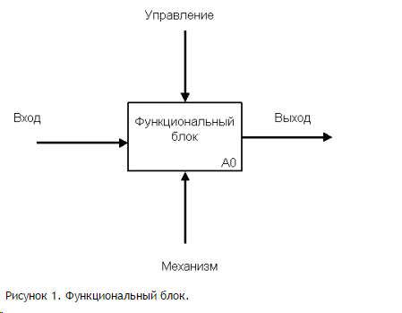

Каждая из четырех сторон функционального блока имеет своё определенное значение (роль), при этом:
Верхняя сторона имеет значение “Управление” (Control);
Левая сторона имеет значение “Вход” (Input);
Правая сторона имеет значение “Выход” (Output);
Нижняя сторона имеет значение “Механизм” (Mechanism).
Каждый функциональный блок в рамках единой рассматриваемой системы должен иметь свой уникальный идентификационный номер.
